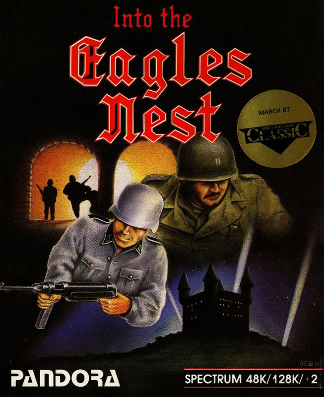
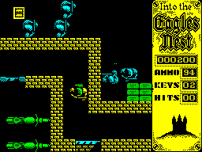
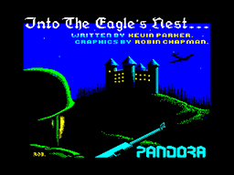

Into the Eagle's Nest


{kind=link}

| Publisher: | Pandore |
| Price: | £8.95 |
| Year: | 1987 |
| Source: | CRASH, Issue 39/64 |

High on a mountainside in Central Europe, a castle clings to its rocky foundation. An imposing fortress, the Eagle's Nest is important to the enemy - it's also vital to you. As a saboteur, you have just entered the stronghold, your mission has two aims - to infiltrate and blow up the castle, and to rescue fellow saboteurs held prisoner within it. You decide which is the most important.
The castle is divided into corridors and rooms on two different levels, with a connecting lift. The view is from above, looking down on the saboteur as you move him left and right, up and down, along corridors and through rooms. An increasing number of locked doors are encountered the deeper into the Eagle's Nest you go. But the necessary keys are to be found scattered randomly about the castle's rooms.

Being a temporary barracks, German squaddies swarm about the place, and when encountered, they fire off shots capable of wounding, and eventually killing - the number of shots that drill your on-screen body are displayed on the right. With 50 hits your fighting days are over. There's a plus point though, picking up the first-aid kits found about the castle extends the saboteur's life - in fact, it's quite amazing what a bit of sticking plaster can heal.
You're armed with a rifle which can be used either to kill enemies. or to shoot doors open. To stop soldiers, a single or double shot may be needed depending on the skill level chosen, but one shot is always sufficient to blast open a door. And it's always better to hide behind a wall and shoot around corners. However, ammunition is limited and must be replenished from time to time. Extra bullets are collected from stores found about the castle. Simply touching ammunition collects it, and can restore you to a full complement of 99 rounds. Monitor how much ammunition remains by watching the right-hand display. If stray bullets hit an explosive dump your life is in danger, one hit merely opens an explosive box, but a second destroys - both it... and you.
Much sabotage work has already been carried out by the men you are rescuing: they were captured before completing their task. If the explosive charges which they laid are found, they can be set off, and when a detonator has been activated it needs a quick getaway to escape the blast.

With this accomplished, the prime object of your mission has been achieved. But remember your secondary objective: to rescue and escape with your captured fellow sabs. When you have freed them from their prison cells, you become their leader and they follow you. But to survive they must be protected, thus complicating an already difficult mission.
And then there's your commanding officer - he's an art lover and wants you to recover stolen antiquities and jewels from the castle. Some of these have been left in obvious places by the slovenly Germans, but others are hidden in ammunition boxes.
Blowing up castles, rescuing prisoners and carrying works of art is pretty hard work, even for the best trained of agents. When physical and nervous exhaustion set in, food must be eaten to save you from severe fatigue. Look out for the plates of nosh, and simply touch them to eat. With this all done, you can trudge back to the secret rendezvous pick-up point, happy in the knowledge that you've had another successful day at the office.
CRITICISM
What a great game... I'm well impressed, it has every-thing a good game should have, a good plot, marvellous graphics and sound and excellent gameplay. Stomping around the multiple levels, blasting away at 'Jerry' is great fun and I'm sure it will be for weeks to come. The graphics are large and well detailed, this gives the impression that the screen is uncluttered - even when there are loads of characters visible. There are plenty of sound effects, but also a horrible droning alarm noise on the title screen which is annoying. On the whole I feel that into the Eagle's Nest is a touch over-priced, but worth it.
Ben Stone
Yet another Gauntlet game... Yawn!! At least into to Eagle's Nest contains something to do, unlike most of the trudge around type games, and it out-scores Gauntlet on one important point - graphics. Most impulse buying will take place by looking at the screen pictures on the front of the inlay, which is a pity as the game is nowhere near as addictive or playable as Gauntlet. The slow scrolling gets on your nerves after a short while. I loved all the little features like the toilets and dinner tables but these are just scenery of little importance in playing the game. A very attractive game and certainly worth looking at.
Paul Sumner
If Pandora can keep the standard of their releases as high as this, then they surely have a successful future ahead of them. The graphics in into The Eagle's Nest are excellent, although occasional flickers are noticeable on some of the characters. The 'tune' (note the inverted commas!) on the title screen is awful; after more than a couple of minutes, it really begins to grind on the nerves. But it's playable and addictive, with stacks of room to stomp around blasting everyone and everything. Worth getting as it represents good value for money.
Mike Dunn
COMMENTS
| Control keys: | Definable, four direction and fire |
| Joystick: | Kempston, Interface 2, Cursor |
| Use of colour: | Bright and attractive |
| Graphics: | Large, detailed and smooth |
| Sound: | Good spot FX, title tune |
| Skill levels: | Two |
| Screens: | Large scrolling play area |
| Summary/General Rating: | Perhaps better looking than playing, this is still a first rate game with some original touches. |
| Presentation: | 80% |
| Graphics: | 85% |
| Playability: | 85% |
| Addictiveness: | 78% |
| Value for money: | 79% |
| Overall: | 82% |